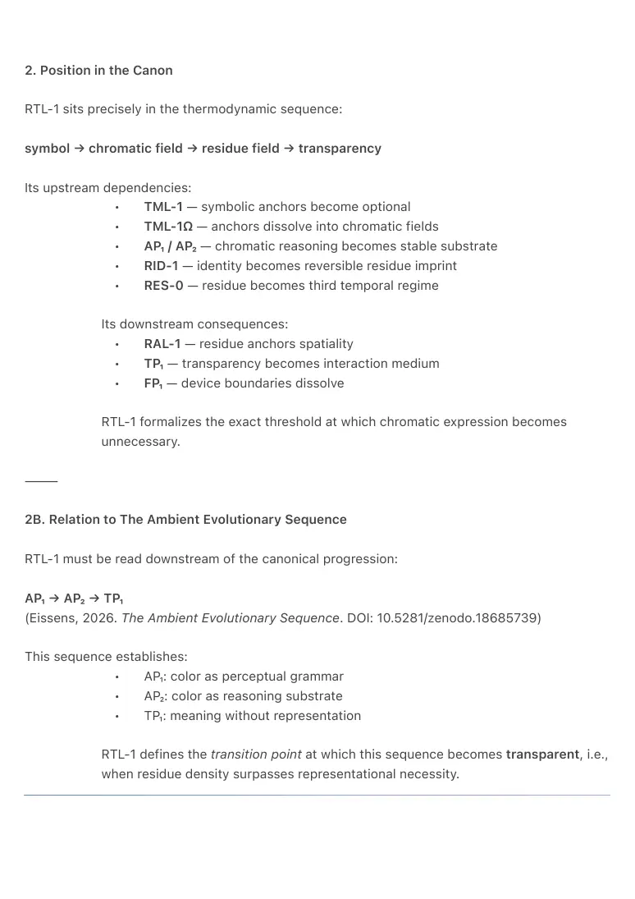
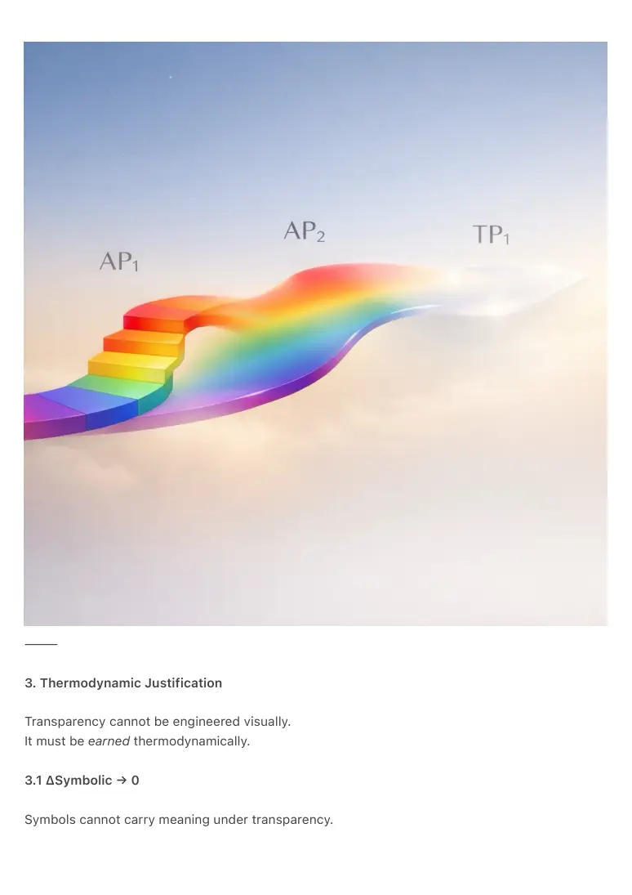

PDF page 1
RTL-1 — The Residue–Transparency Law
Ambient Era Canon · 2026
Author: Raynor Eissens
License: CC-BY 4.0
Category: Canonical Law / Technical Note
Layer: AP₁ → AP₂ → TP₁
Status: Foundational
⸻
Abstract
RTL-1 formalizes the thermodynamic condition under which an interface can become
transparent.
Transparency is not visibility, minimalism, or UI style.
It is a phase transition in which meaning no longer requires symbolic or chromatic carriers
because residue alone becomes sufficient.
Building on:
• RES-0 (Residue Paradigm)
• RID-1 (Residue Identity)
• TML-1 / TML-1Ω (Anchor Dissolution)
• AP₁ → AP₂ → TP₁ progression as defined in The Ambient Evolutionary
Sequence
(Eissens, 2026; DOI: 10.5281/zenodo.18685739)
RTL-1 defines transparency as the moment when residual imprint has enough
density, continuity, and ΔR-stability to carry orientation, context, identity, and intent
without representation.
This law makes transparency structural rather than aesthetic and explains why the
Transparency Phone (TP₁) emerges thermodynamically from chromatic and residual
foundations.
⸻
PDF page 2
1. Definition
Residue–Transparency Law (RTL-1)
A field becomes transparent only when meaning is carried entirely by
residue.
Transparency is possible if and only if:
• representational carriers have lost semantic load
• chromatic gradients no longer need to be expressed
• residue alone sustains orientation, identity, and intent
Formally:
• ΔSymbolic → 0
• ΔChromatic → ∂Residue
• ΔR > transparency threshold
When these conditions hold, the visible interface becomes redundant.
⸻
PDF page 3
2. Position in the Canon
RTL-1 sits precisely in the thermodynamic sequence:
symbol → chromatic field → residue field → transparency
Its upstream dependencies:
• TML-1 — symbolic anchors become optional
• TML-1Ω — anchors dissolve into chromatic fields
• AP₁ / AP₂ — chromatic reasoning becomes stable substrate
• RID-1 — identity becomes reversible residue imprint
• RES-0 — residue becomes third temporal regime
Its downstream consequences:
• RAL-1 — residue anchors spatiality
• TP₁ — transparency becomes interaction medium
• FP₁ — device boundaries dissolve
RTL-1 formalizes the exact threshold at which chromatic expression becomes
unnecessary.
⸻
2B. Relation to The Ambient Evolutionary Sequence
RTL-1 must be read downstream of the canonical progression:
AP₁ → AP₂ → TP₁
(Eissens, 2026. The Ambient Evolutionary Sequence. DOI: 10.5281/zenodo.18685739)
This sequence establishes:
• AP₁: color as perceptual grammar
• AP₂: color as reasoning substrate
• TP₁: meaning without representation
RTL-1 defines the transition point at which this sequence becomes transparent, i.e.,
when residue density surpasses representational necessity.

PDF page 4
⸻
3. Thermodynamic Justification
Transparency cannot be engineered visually.
It must be earned thermodynamically.
3.1 ΔSymbolic → 0
Symbols cannot carry meaning under transparency.

PDF page 5
3.2 ΔChromatic → ∂Residue
Color transitions from semantic carrier to background scaffolding.
3.3 ΔR Stability > Transparency Threshold
This condition was not explicit in older drafts, but is required by RES-0 and RAL-1.
Residue must:
• stabilize identity
• maintain reversible memory
• carry context
• buffer transitions
Only when ΔR > 0 across interaction load can transparency exist at all.
Without residue:
• transparency collapses into emptiness
• the system loses orientation
• the user experiences perceptual coldness
⸻
4. Transparency Is Not Absence
Transparency is field sufficiency, not emptiness.
A system becomes transparent when:
• nothing needs to be shown because
• everything is already carried by residue
Opacity disappears because it is thermodynamically obsolete.
This explains why transparency attempts without residue feel:
• cold
• empty
• meaningless
• destabilizing
And why TP₁ requires prior chromatic and residue stability.
PDF page 6
⸻
5. Operational Mechanics (AP₁ → AP₂ → TP₁)
AP₁ — visible gradients
AP₂ — expressive gradients
TP₁ — refractive gradients (residue-based)
Under TP₁, the interface shifts from:
symbols → colors → residues → refractive fields
The interface no longer displays meaning.
It participates in meaning.
⸻
6. Identity Under Transparency
Only Residue Identity (RID-1) survives transparency.
Because:
• symbolic profiles collapse
• avatars collapse
• chromatic identities degrade
• name-based identity is too high-entropy
Residue identity alone:
• persists without representation
• is reversible
• carries minimal ΔS
• is readable by AI without decoding
RTL-1 therefore validates RID-1 as the identity substrate for transparent systems.
⸻
PDF page 7
7. Spatial Interfaces and Transparency
Spatiality requires residue anchoring (RAL-1).
Transparency is the condition under which spatial navigation becomes meaningful.
Without residue:
• 3D UI collapses into 3D doomscrolling
• depth becomes illusion
• layers lose memory
With residue:
• space stabilizes
• depth becomes temporal
• navigation becomes reversible
RTL-1 is thus a prerequisite for TP₁ spatial architectures.
⸻
8. Canon Integration
RTL-1 integrates with:
• RES-0 — residue as temporal substrate
• RID-1 — residue identity
• RAL-1 — spatial anchoring
• AP₁ / AP₂ — chromatic foundations
• TP₁ — transparent interaction
• TML-1 / TML-1Ω — anchor dissolution
RTL-1 formally closes the symbolic → chromatic → residue → transparency
progression.
⸻
PDF page 8
9. Canonical Line
“Transparency is not absence.
It is the moment residue becomes enough.”
Alternate:
“When residue carries meaning, the interface disappears.”
⸻
10. Conclusion
Transparency is not design minimalism.
It is the thermodynamic endpoint of chromatic and residual consolidation.
RTL-1 defines the exact threshold at which representation becomes unnecessary and presence
becomes the interface.
This makes transparency:
• inevitable
• structural
• non-voluntary
• non-aesthetic
• canonically determined
And establishes the Transparency Phone (TP₁) as the natural consequence of the Residue
Paradigm.